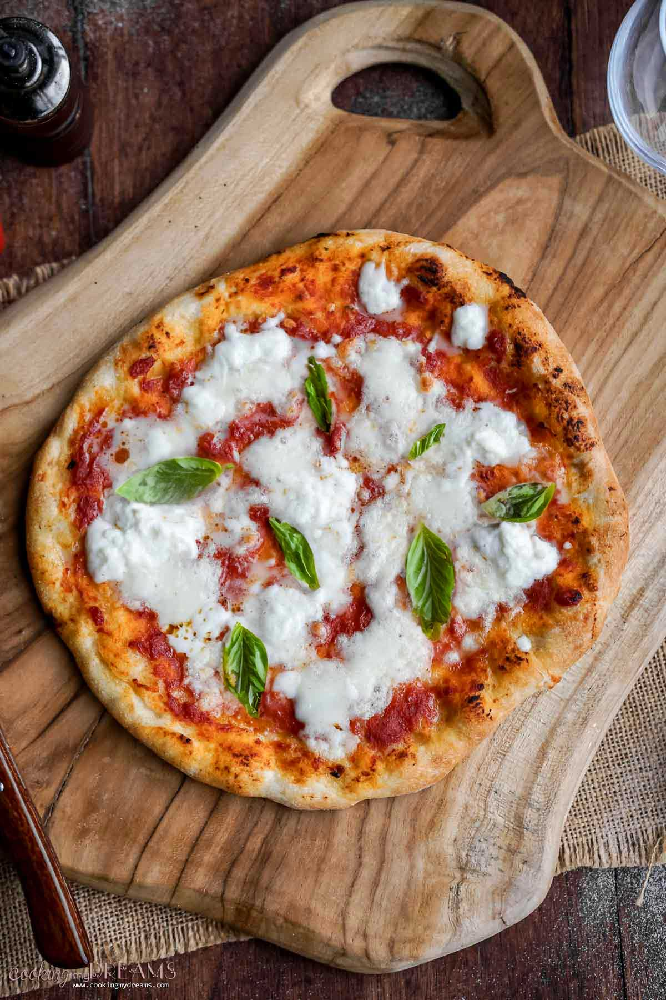

Home
Margherita Pizza

Description
Margherita pizza is a traditional Italian dish featuring a simple yet delicious combination of fresh tomatoes,
mozzarella cheese, and basil leaves. The ingredients are arranged on a thin crust and baked to perfection for a
light, flavorful experience.
Known for its vibrant colors that reflect the Italian flag, Margherita pizza is a symbol of Italy’s rich culinary
heritage. It's a favorite for those who appreciate fresh, high-quality ingredients and classic taste.
Steps to make the dish
- Preheat the oven to 475°F (245°C).
- Roll out pizza dough on a floured surface to your desired thickness.
- Spread a thin layer of tomato sauce over the dough.
- Add fresh slices of mozzarella cheese evenly over the sauce.
- Top with fresh basil leaves and drizzle a bit of olive oil.
- Bake the pizza on a preheated pizza stone or baking tray for 10-12 minutes.
- Remove from oven when the crust is golden and cheese is bubbling.
- Let cool slightly, then slice and serve hot.